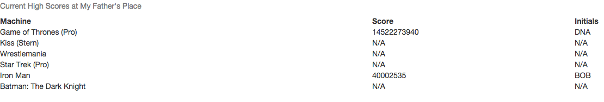

It is slightly more complicated, but still straightforward to pull the high scores posted for the machines at your location and add them to your website. This would be a nice feature to promote a long-term 'high-score' challenge, having the current stats directly available on your website. Currently the high score feature of the pinball map isn't used much by users, but instances such as this could promote using it more!
To search for high scores for machines at a location, the request URL is http://pinballmap.com/api/v1/machine_score_xrefs/:id.json. After some searching, the id in question is the location machine reference avaialabe from requesting http://pinballmap.com/api/v1/region/:region/location_machine_xrefs.json.
Making a machine score object makes it possible to package the data coming from different requests so we can track the name of the machine, high score and initials of the person who got the high score:
function machineScoreObject(machine_name, score, initials) {
this.machine_name = machine_name;
this.score = score;
this.initials = initials;
}
The following code instantiates and populates new machine score objects, pushing each object onto an array:
var req = new XMLHttpRequest();
req.open('GET', 'http://pinballmap.com/api/v1/region/portland/location_machine_xrefs.json', false);
req.send();
var data = JSON.parse(req.responseText);
var machines = [];
for (machine in data.location_machine_xrefs) { //for each machine in the JSON file
//if the machine matches the location ID of interest
if (data.location_machine_xrefs[machine].location_id == '890') {
var name = data.location_machine_xrefs[machine].machine.name; //machine name
var id = data.location_machine_xrefs[machine].id; //machine ID
var req = new XMLHttpRequest();
//request machine score JSON file for machine ID
req.open('GET', 'http://pinballmap.com/api/v1/machine_score_xrefs/' + id + '.json', false);
req.send();
var reqScore = JSON.parse(req.responseText);
if(reqScore.machine_scores.length == 0) { //if there's no score recorded for the machine
var highScore = 'N/A';
initials = 'N/A';
} else {
// initialize first machine score in list as high score
var highScore = reqScore.machine_scores[0].score;
var initials = reqScore.machine_scores[0].initials
//if there's more than one recorded score, compare scores to get highest
for(var i=1; i<reqScore.machine_scores.length; i++) {
if (reqScore.machine_scores[i].score > highScore) {
highScore = reqScore.machine_scores[i].score;
initials = reqScore.machine_scores[i].initials;
}
}
}
var machineScore = new machineScoreObject(name, highScore, initials); //create new object
machines.push(machineScore); //push object onto array
}
}
With the array of machine score objects, we can now dynamically add the data to our website in the form of a table:
var table = document.getElementById('machinesTable');
var headerRow = document.createElement('tr');
var machine = document.createElement('th');
machine.textContent = 'Machine';
var score = document.createElement('th');
score.textContent = 'Score';
var initials = document.createElement('th');
initials.textContent = 'Initials';
headerRow.appendChild(machine);
headerRow.appendChild(score);
headerRow.appendChild(initials);
table.appendChild(headerRow);
for (var i=0; i<machines.length; i++) {
var row = document.createElement('tr');
var machineData = document.createElement('td');
machineData.textContent = machines[i].machine_name;
row.appendChild(machineData);
var machineScore = document.createElement('td');
machineScore.textContent = machines[i].score;
row.appendChild(machineScore);
var machineInitials = document.createElement('td');
machineInitials.textContent = machines[i].initials;
row.appendChild(machineInitials);
table.appendChild(row);
}
document.body.appendChild(table);
An image of the list appended to a page:
Unfortunately there are many machines without scores posted in the pinball map API. If a proprietor wants to include this feature on their website, it would be easy for them to update pinballmap.com with the current high scores on their machines so the fields are populated with data.
After determining how to fetch the high scores for the machines at a given location, we're now comfortable to do some more in-depth data retrieval and analysis wtih the API.
Next